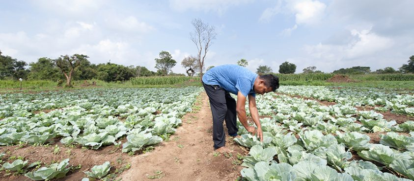
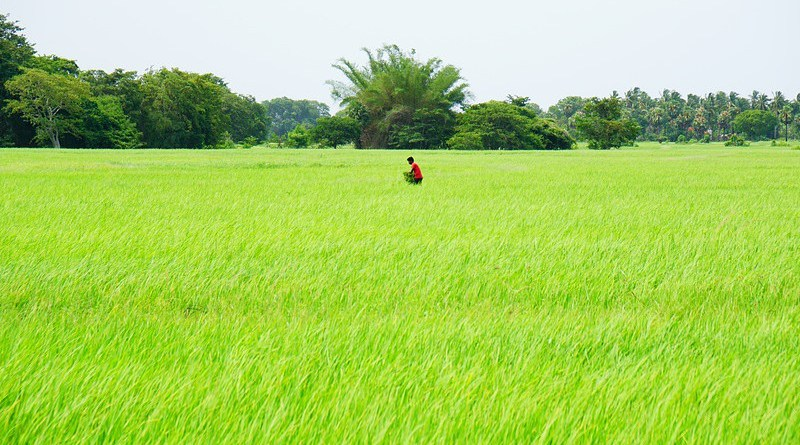

HOW SRI LANKAN FARMERS EXPERIENCE CLIMATE CHANGE
As an island nation vulnerable to climate change, Sri Lanka is increasingly exposed to climate change impacts across many sectors.
Agriculture is one of the most climate-sensitive sectors with a large dependence on reliable weather patterns and natural resources.
With climate change, a whole new set of challenges is thrust upon farmers and other key stakeholders of the sector.
It is vital to understand these new challenges, key enablers and multipliers, and potential solutions for individuals and communities.
If farmers, the primary food producers, lack resilience and adaptive capacities, it will impact the country’s food and nutritional security, economy, sustainable development efforts, and many other aspects.

The agriculture sector generates livelihood opportunities for a significant part of Sri Lanka’s population, especially in rural areas.
In the face of climate challenges and poor income, some farmers are seen leaving behind agriculture for other livelihood opportunities.
Drought, excessive rains, untimely rainfall, shift of seasons, and pests and diseases have been some of the common complaints of rural farmers.
Many farmers have come to realize that their farming patterns and methods might need to change in response to changes in weather patterns.